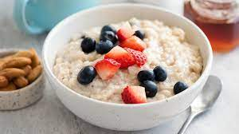
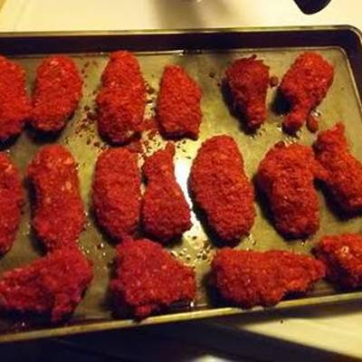
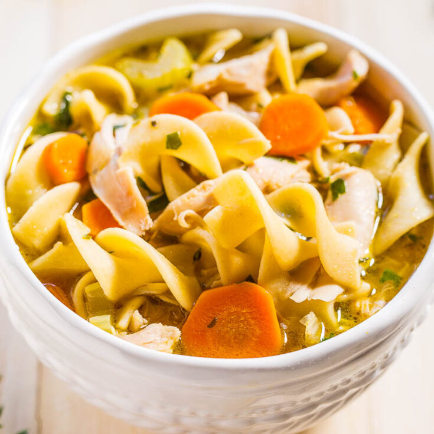
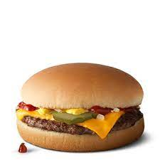

Odin Recipes
Cookies

Warm and ready to crumble for you
This recipe is created by professional people who develop the best of the best for the people they make these incredible cookies for. You're really lucky you're even getting your eyes on this
you feel me. Once you follow these instructions your life will change forever and I don't know if your deserts will ever be the same. You will be so addicted you will end up leaving your
job to buy all the recipes in bulk just to make these constantly and do it at all times. These brownies are also carefully made so that they digest smoothly and give you zero tummy ache. Make
sure to give some to your dog because I know he is looking at them for you.
Ingredients
- Step 1: Preheat the oven to 325 degrees F (165 degrees C). Grease cookie sheets or line with parchment paper.
- Step 2: Sift together the flour, baking soda and salt; set aside.
- Step 3: In a medium bowl, cream together the melted butter, brown sugar and white sugar until well blended. Beat in the vanilla, egg, and egg yok until light and creamy. Mix in the sifted
ingredients until just blended. Stir in the choclate chips by hand using a wooden spoon. Drop coookie dough 1/4 cup at a time onto the prepared cookie sheets. Cookies should be about 3
inches apart.
- Bake for 15 to 17 minutes in the preheated oven, or until edges are lightly toasted. Cool on baking sheets for a few minutes before transferring to wire racks to cool completely.
Instructions
- 2 cups all-purpose flour
- 1/2 teaspoon baking soda
- 1/2 teaspoon salt
- 3/4 cup unsalted butter, melted
- 1 cup packed brown sugar
- 1/2 white sugar
- 1 tablespoon vanilla extract
- 1 egg
- 1 egg yolk
- 2 cups semisweet chocolate chips
Brownies

Choclate goodness for your taste buds
These Brownies are made with the most quality ingredients you can buy. If you make these brownies you will rule the world if you can sell them to enough people. When cutting szn hits you're
gonna use these at least one time per week as a cheat and wonder why you're gaining weight unexpectedly when your bodybuilding show is coming up. Don't worry next year there will be a new recipe
that will be less calories for your gainz, use this one for now. Adding M&Ms or Oreos inside of them is optional as well as nuts.
Ingredients
- 2 eggs + water
- powdered sugar
- unsweetened cocoa powder
- Oil
- Vanilla Extract
Instructions
- First, mix together the dry and wet ingredients in two separate bowls.
- Combine the wet and dry ingredients.
- Pour the batter into an 8x8 inch baking pan lined with parchment paper.
- Bake in a 325 degree oven for 40 to 45 minutes
- Store any leftovers in an airtight container at room temperature for up to 3 days.
Oatmeal

Hearty and Healthy!
The recipe for this oatmeal will have you transcending humanity on levels never before seen so make sure to have responsibility with all this power you're about to recieve or
it will get dangerous! You will full viking mode! You can't even make this stuff in Minecraft! You will want to eat this every morning before lifting so that you're always hitting
new PRs with the weight. You will also want to give this to your family before any sports game so they are hitting homeruns and scorin' goals.
Ingredients
- 1 cup old fashioned rolled oats(such as Quaker Oats Old-Fashioned Rolled Oats)
- 1 cup milk
- 1 cup water
- 1/8 teaspoon kosher salt
- 1/2 teaspoon ground cinnamon
- 1 teaspoon honey
Instructions
- Combine oats, milk, water, salt, and cinnamon in a medium saucepan. Bring to a boil, then reduce heat to low.
- Simmer uncovered for 3 to 5 minutes until thickened, stirring occasionally. Remove from heat and let cool slightly.
- Divide equally between two bowls. Drizzle each serving with 1/2 teaspoon honey. Add additional desired toppings and serve.
Takis Chicken

Just the right heat!
This chicken is made just as good if not better than Buffalo Wild Wings. When you're taste buds hit it you will never want to make chicken differently ever again. It's made to be hot but
a little crunchy on the outside and perfectly cooked/heated on the inside. This protein is of the highest quality and taste for your muscles, during bulking
szn the extra calories will help and during cutting szn you justh have to take out the takis and you will have less calories to get down. This recipe was designed by Arnold Schwarzenegger himself
using an air fryer.
Ingredients
- 2 cups of white flour
- 2 or 3 eggs(depending on amount of chicken)
- blended takis in a bowl
- canola oil
- salt and pepper
- a plate and tin foil to heat it up inside after air frying it
Instructions
- Put a little canola oil on the chicken breast as well as salt and pepper, then cut it into tender size pieces.
- Go piece by piece
- White flour bowl
- Dip into stirred egg
- Dip into blended takis
Chicken Noodle Soup

Calm as water, Healthy as chicken
This chicken noodle soup will teach you things. When you're just beyond stressed out and feel like your lid is about to blast off, just look at it carefully. A light 6 grams of protein but 22
different amino acids for your muscular system.
Ingredients
- 2 tablespoons unsalted butter
- 1 onion diced
- 2 carrots, peeled and diced
- 2 stalks celery, diced
- 3 cloves garlic, minced
- 8 cups chicken stock
- 2 bay leaves
- Kosher salt freshly gound black pepper, to taste
- 2 1/2 pounds bone-in, skinless chicken breasts
- 2 1/2 cups wide egg noodles
- 2 tablespoons chopped fresh parsley leaves
- 2 tablespoons chopped fresh dill
- 1 tablespoon freshly squeezed lemon juice, or more, to taste
Instructions
- Melt butter in a large stockput Dutch oven over medium heat,. Add onionm carrots and celery. Cook, stirring occasionally, until tender, about 3-4 minutes. Stir in garlic until fragnant,
about 1 minute.
- Whisk in chicken stock and bay leaves; season with salt and pepper, to taste. Add chicken and bring to boil; reduce heat and simmer, covered, until the chicken is cooked through, about
30-40 minutes. Remove chicken and let cool before dicing into bite-size pieces, discarding bones.
- Stir in chicken and pasta and cook until tender, about 6-7 minutes.
- Remove from heat; stir in parsley, dill and lemon juice; season with salt and pepper, to taste.
- Serve immediately.
Cheeseburger

Good as McDonalds
You might've worked at McDonalds before if you're reading this so you have a good idea on how this type of burger is made. The only difference between this tutorial and a McDonalds
burger are the very specific ingredients and the specific machines used to cook the ingredients in your home in a slower manner.
Ingredients
- 1/2 teaspoon dried onion flakes
- 2 teaspoons boiling water
- 1/8 lb ground beef
- 1 plain hamburger bun
- salt, to taste
- 1 tablespoon ketchup
- 1 tablespoon ketchup
- 1/2 teaspoon ketchup
- 1 dill pickle
- 1 slice american cheese
Instructions
- Mix the dried onion with the boiling water and let sit until re hydrated and no longer dry and crunchy.
- Roll ground beef into a ball and press flat on waxed paper until about 1/8 inch thick.
- Brown faces of bun in a dry frying pan over medium heat. Remove bun and cook burger in the same pan for 2 min per side, salting each side lightly during cooking.
- On the tio bun-half spread the ketchup, mustard, and the onion, in the irder, and top the pickle slice.
- Put the beef patty on the bottom bun and quickly slap the top and bottom together. Microwave the burger on high for 10-15 minutes. FOR CHEESEBURGERS: follow the above the recupe, but add
a slice of American cheese on top of the beef patty in the final assembly. Microwave for 15 seconds on high to help steam the bun and simulate being wrapped in paper.